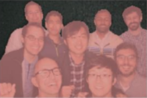

Jianfeng Zhang (张健锋)Undergraduate Student
Rm 316, Northwest Building,
|
 |


Biography [CV]
I am currently an Applied Mathematics undergrad. student from Wuhan University, supervised by Prof. Xiaoping Zhang for undergraduate research. I am also intern at Farsee2, working with Prof. Song Wang and Prof. Lili Ju for Semantic Segmentation and Stereo Matching.
My research interests include 2D/3D Vision and Deep Learning.
Publications

|
Jianfeng Zhang, Liezhuo Zhang, Yuankai Teng, Xiaoping Zhang, Song Wang, Lili Ju.
"Interactive Binary Image Segmentation with Edge Preservation", submitted to
AAAI Conference on Artificial Intelligence (AAAI), Sep. 2018.
[paper] |

|
Jianfeng Zhang, Yan Zhu, Xiaoping Zhang, Ming Ye, Jinzhong Yang. "Developing a Long Short-Term Memory (LSTM) based Model for Predicting Water Table Depth in Agricultural Areas", Journal of Hydrology (JH), 2018. |
Projects
|
 |
Deeplab V3+ in PyTorch
We reimplement Deeplab V3+ in PyTorch, and evaluate it on Pascal VOC 2012 and Cityscapes datasets. |
|
|
Jianfeng Zhang, Yan Zhu, Xiaoping Zhang, Ming Ye, Jinzhong Yang. "Developing a Long Short-Term Memory (LSTM) based Model for Predicting Water Table Depth in Agricultural Areas", Journal of Hydrology (JH), 2018. |
Honors & Awards
| Excellent Demo Award, DeeCamp, 2018 |
| Best Bachelor Thesis Award (1/180+, School of Mathematics and Stastics, Wuhan University), 2018 |
| Honorable Mention, The Mathematical Contest in Modeling (MCM), Consortium for Mathematics and Its Application, 2015 |
| Outstanding Student Scholarship, 2015-2017 |
Teaching
| 2017-2018 | Fall | Data Structures and Algorithms in Python |
| 2017-2018 | Spring | C Language Programming |
© Jianfeng Zhang | Last updated: 09/11/2018